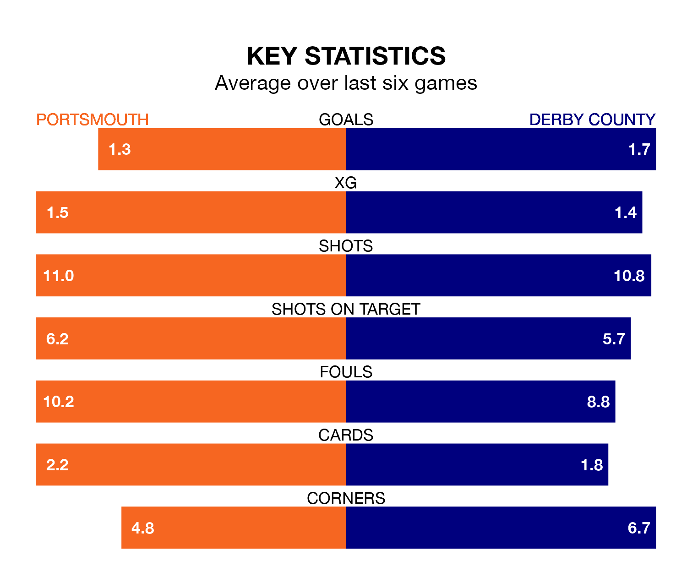

EFL League One's top two sides face each other at Fratton Park in Tuesday's late kick-off, when Portsmouth host second-placed Derby County.
Portsmouth have picked up 25 wins and 11 draws from 40 games so far this season, and sit five points above the visitors going into the 8pm match.
The Rams, meanwhile, have won 25 and drawn six of 41, picking up 81 points.
With 70 goals in 41 games so far this season, Derby are the league's joint-third-highest scorers with 1.7 goals per game. And they are conceding fewer than average, letting in 35 goals at a rate of 0.9 per game.
Portsmouth are also above average scorers, with 1.6 goals per game, compared to a league average of 1.3. They have conceded 0.8 goals per game.
With Will Norris between the sticks, Pompey can rely on one of the league's safest pair of hands. He has kept 18 clean sheets in his 40 appearances this season, and no 'keeper has prevented the opposition scoring more often in EFL League One.
In County's net, Joe Wildsmith has 16 clean sheets in 35 games.
The home side are in good form in EFL League One, with four wins and two draws from their last six games.
But with five wins and one loss over that period, the Rams' form is even better – they have taken 15 points from 18, compared to Portsmouth's 14.
In the last three years, Portsmouth and Derby have played each other on three occasions. they drew all of them.
Their last meeting was on September 16, when they played out a 1-1 draw.
Portsmouth's last match was on Friday, a 3-1 win against Wycombe Wanderers, with Colby Bishop (two) and Christain Saydee getting the goals for Pompey.
Derby beat Blackpool 1-0 last time out, also on Friday, with Ebou Adams on the scoresheet.
Tuesday's match will be refereed by Will Finnie, who has taken charge of 15 EFL League One games so far this season, issuing one red card and booking 51 players. He has awarded three penalties.
The last Portsmouth game Finnie refereed was a 2-1 away win against Wigan Athletic on September 30. His last Derby match was their 3-2 win away at Oxford United on December 29.
Updated: 10:31 (UTC), 31/03/24